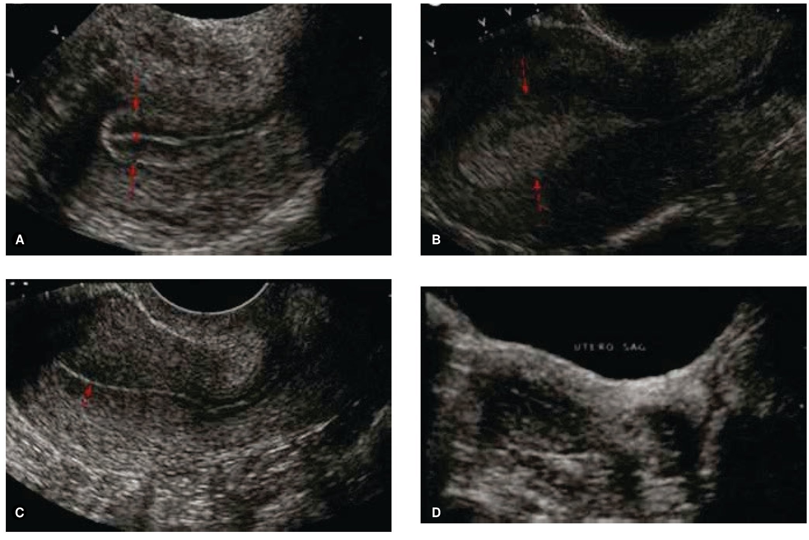
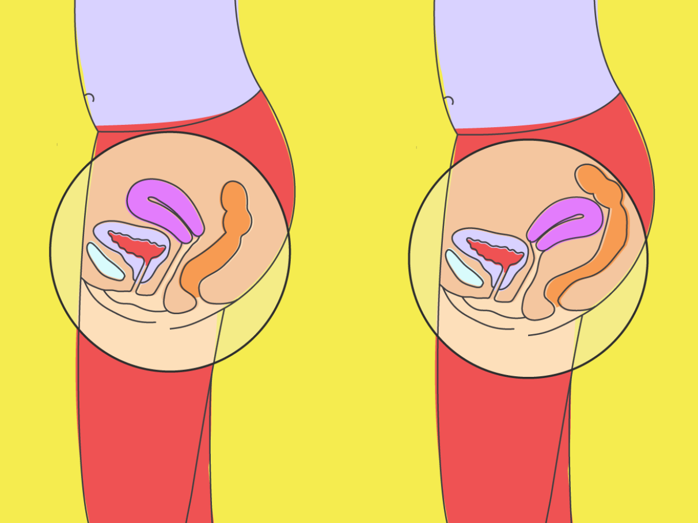
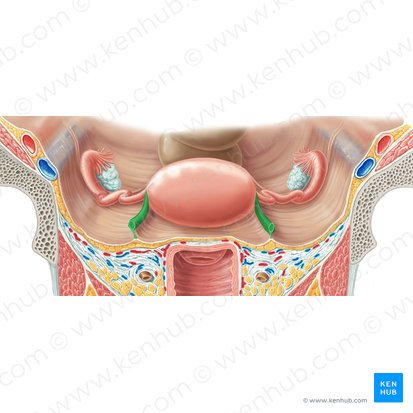
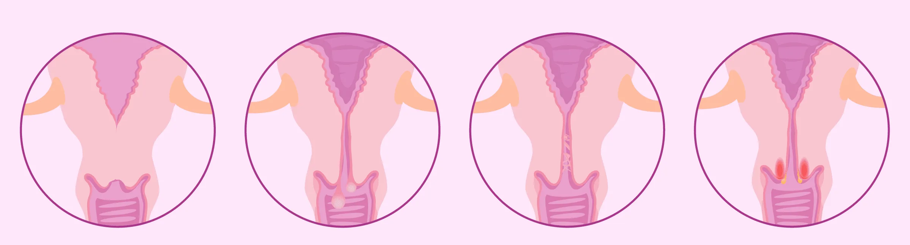

Lee cada caso y selecciona la mejor opción:
Caso 1: Una ecografía muestra un engrosamiento anormal en la capa funcional interna del útero. ¿Qué estructura está afectada?
Caso 2: Una cirugía revela que el útero está invertido. ¿Qué región del útero se ha desplazado anormalmente?
Caso 3: Una paciente presenta dolor en el cuadrante inferior derecho y un útero desviado. Se sospecha de un defecto en la fijación uterina. ¿Qué ligamento puede estar comprometido?
Caso 4: Durante un examen ginecológico se detecta una alteración en el canal que comunica el útero con la vagina. ¿Qué estructura está comprometida?
